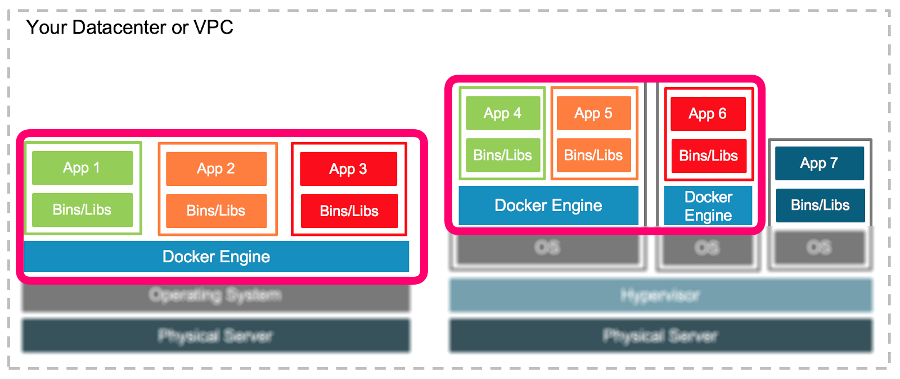

Dynamiser votre infrastructure
avec PXE & Docker
Arnaud Brunet
Plan
- Qui suis-je ?
- La problématique
- Vous avez dit PXE ?
- Ca marche comment ?
- Et en pratique ?
- Demo
- Et docker ?
- Demo avec docker
- Cluster dynamique
- Conclusion
Qui suis-je ?
- Arnaud Brunet (arnaud.brunet@gmail.com)
- Architecte logiciel
- au gouvernement - DTSI (arnaud.brunet@gouv.nc)
- +10 ans d'expérience dans le developpement
- gronono sur github
Qui ne suis-je pas ?
- Un OPs (un gars des infras)
- Quelqu'un utilisant PXE au quotidien
- Un spécialise docker
- Un porte-parole du gouvernement
La problématique

Focus sur docker engine
Comment on gère l'OS ?

A la main ?
Ou en automatique ?
idem pour les machines virtuelles
Vous avez dit PXE ?
Boot par le network
- Pre-boot eXecution Environment
- Avant: propriétaires puis Reverse-ARP, BootP
- Apparut fin 90's
- Plusieurs évolutions: gPXE (2006), iPXE (2011)
A quoi ça sert ?
- Booter sans disque dur
- Tester des OS
- Fournir des outils de diagnostic
- Installer un OS sans le support physique
- Gérer les OS de façon centralisée
- Gérer les mises à jour
- Ajouter de nouvelles machines
Comment ça marche ?
Et en pratique
Il faut:
- Au moins deux machines: le serveur et un client
- Un serveur DHCP
- Un serveur TFTP
- Un serveur NFS / HTTP ou autres suivant les besoins
Demo 1 : boot sans PXE
Présentation du serveur PXE
- Debian minimaliste
- Serveur DHCP / TFTP : dnsmasq
- Configuration PXE
- Serveur NFS
Demo 2 : boot avec serveur PXE
Et docker ?
- 1 machine = 1 OS = 1 docker engine
- Demo 3 : docker engine sur les clients
Cluster dynamique ?
- Gestion par cluster
- Enregistement automatique
- avec Kubernetes / Swarm
CoreOS: PXE / docker / cluster
- etcd: données partagées
- fleet: services partagées
- flannel: gestion du reseau
- maj auto
Conclusion
- Gros travail d'intégration
- Soulève quelques questions
- Single point of failure : keep alive ?
- Gestion des disques : Cepth Storage ?
- Cas particulier de l'infra legacy ?
- Design des services pour supporter le failover ?